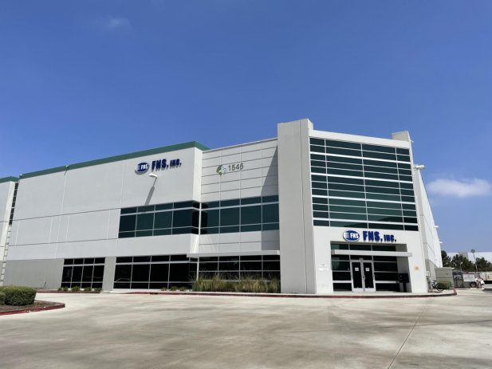
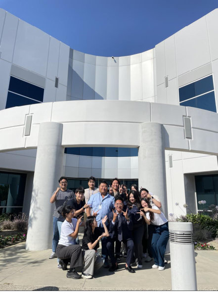
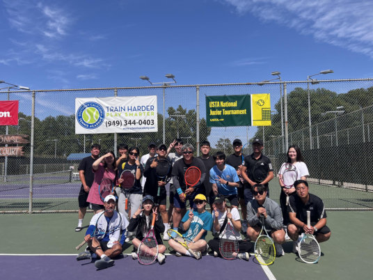

01 / 물류 · 운송 운영
FNS inc.OCEAN IMPORT · LOS ANGELES
담당 과장님의 출산휴가 동안 LG전자 고객사의 창고 간 재고 이동(Warehouse Transfer)을 4개월간 혼자 맡았습니다. 모든 건이 긴급했고 물량도 불규칙했습니다. 지연의 원인이 물량이 아니라 정보 흐름에 있다는 것을 찾아 업무 방식을 다시 짰습니다.
- 담당
- Warehouse Transfer 전 과정 · 데일리 트래킹 · 통관 서류 · 정산
- 협업
- LG 고객사 · 8개 창고 · 트럭킹 회사 · 사내 팀
- 3개월 치 메일 전부 분류하기주문 1건당 평균 20건의 메일 중 6건 이상이 창고 정보나 화물 상태를 묻는 내용이었습니다.
- 창고 8곳 정보 정리하기창고마다 직접 연락해 운영시간·담당자·특이사항을 매뉴얼로 만들었습니다.
- 묻기 전에 공유하기트럭킹사에 출하 가능 시간·서류를 미리 보내고, 매일 아침 운송 현황표를 고객사에 먼저 공유했습니다.
결과
- 운송 납기 준수율
- 95%+단독 담당 4개월 기준
- 업무 메일
- 30%↓사전 공유 전후 주문당 메일 수 비교
- Warehouse Transfer 매출
- 18%↑고객사 위탁 물량이 늘어 4개월 순수익 1억 1,600만 원



대표 사례 · 첫 판단에서 원인까지
지연은 물량이 아니라 '누가 무엇을 모르는가'에서 생겼다
- 증상
긴급 건마다 메일이 오가며 대응이 늦어지고, 트럭이 창고 앞에서 대기하며 추가 비용이 생길 위험이 있었습니다.
- 원인 추적
과장님이 주고받은 최근 3개월 치 메일을 유형별로 나눴습니다.
창고 정보나 화물 상태를 뒤늦게 묻는 메일이 전체의 30%를 넘었습니다. - 검토한 방법
다른 부서의 업무 절차를 참고해, 자주 묻는 정보를 미리 정리해 둘 수 있는지 확인했습니다.
- 해결
창고 정보 매뉴얼과 아침 현황표로 상대가 묻기 전에 알 수 있게 했습니다. 예정 시간에 맞춰 출하해 트럭 대기 비용도 막았습니다.
현장에 적용하면
라스트마일 지연도 정보의 빈틈에서 생깁니다. 협력사·라이더·유관 조직이 묻기 전에 알 수 있는 흐름을 만들고, 반복 공유 업무는 AI로 자동화하겠습니다.